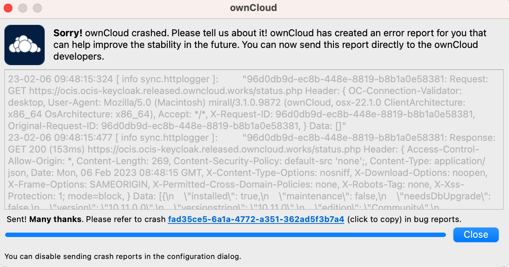

Troubleshooting
Introduction
When reporting bugs, it is helpful if you first determine what part of the system is causing the issue.
This documentation focuses on issues that require additional support, not on behaviors. See the FAQ for behavior-related issues.
The following two general issues can result in failed synchronization:
-
The instance setup you synchroinize with is incorrect.
-
The Desktop App contains a bug.
Identifying Basic Functionality Problems
- Performing a login test
-
The first step in troubleshooting synchronization problems is to verify that you can log on to the ownCloud web application. To verify connectivity to the ownCloud instance, try logging in using your web browser. If you cannot access it, or are not prompted for your credentials etc., contact your administration department to verify your credentials or that the instance setup is working correctly.
- Ensure the connection is working
-
If all Desktop App fail to connect to the ownCloud instance, but access via the web interface works properly, the problem is often a misconfiguration or a change in the URL or proxy being used. Please contact your Admin to verify that the instance connected to is working correctly and that you are using the correct connection URL or proxy.
CSync Unknown Error
If you see this error, quit your Desktop App, delete the `._sync_xxxxxxx.db' file, and then restart your Desktop App. This is a hidden file, and you must first allow hidden files to be shown in your file browser.
| Please note that this will also erase some of your settings for which files to download. |
Error Updating Metadata Access Denied
There are very rare cases when using Windows and VFS, where the Desktop app complains about denied access. The log contains the following message, including the source file for reference:
"WindowsError: ffffffff80070005: Access is denied."This can happen if the default permissions of the folder containing the synchronized data have been changed for the owning user. To resolve this issue, the owning user needs to have Full Control. See the sample images below for what this should look like. You can get there by right clicking on the :

|

|
If the permission is not set to Full Control, you can either correct it or ask your administrator for assistance.
Low Disk Space
-
Downloads that would reduce the free disk space below 250 MB will be skipped or aborted.
-
Synchronization of a folder will stop completely if the remaining disk space falls below 50 MB.
Isolating Other Issues
Other issues that can affect the synchronization of your files:
-
If you find that the synchronization results are unreliable, make sure that the folder you are synchronizing to is not shared with other synchronization applications.
-
Synchronizing the same directory with ownCloud and other synchronization software such as Unison, rsync, Microsoft Windows Offline Folders, or other cloud services such as Dropbox or Microsoft OneDrive is not supported and should not be attempted. In the worst case, synchronizing folders or files using the Desktop App and other synchronization software or services could result in data loss.
-
If you find that only certain files are not synchronized, the synchronization protocol might be at work. Some files are automatically ignored because they are system files; other files might be ignored because their filenames contain characters that are not supported on certain file systems. For more information, see the Ignored Files section.
Log Files
Effective software debugging requires as much relevant information as possible. To assist the ownCloud support staff, please try to provide as many relevant logs as possible. Logs can help track down problems, and if you are reporting a bug, logs can help resolve a problem more quickly.
The Desktop App log file is often the most helpful log to provide.
Obtaining the Desktop App Log File
There are several ways to create log files. The most common way is to enable logging to a temporary directory, which is described first.
|
Desktop App log files contain file and folder names, metadata, server URLs, and other private information. Only upload them if you are comfortable sharing the information. However, logs are often essential for tracking down a problem, so please consider making them available to developers privately. |
Logging to a Temporary Directory
-
Open the Desktop App.
-
Either
click or
press F12 (Windows) or Ctrl-L (Linux) or Cmd+L (macOS) on your keyboard.The Log Output window opens.

-
Enable the Enable logging to temporary folder checkbox.
-
Later, to find the log files, click the Open folder button.
-
Select the logs for the time frame in which the issue occurred.
| The choice to enable logging is retained across restarts of the Desktop App restarts. |
Log HTTP Requests and Responses
When HTTP logging is enabled, log files will contain additional entries such as:
23-09-01 16:31:14:031 [ info sync.httplogger ]: "eca37889-6dea-42cf-81a2-c3826efbf146: Request: GET https://cloud.example…
23-09-01 16:31:14:143 [ info sync.httplogger ]: "eca37889-6dea-42cf-81a2-c3826efbf146: Response: GET 200 (112ms) https://cloud.example…| Log Content | Description |
|---|---|
|
Timestamp |
|
Log item category label |
|
|
|
List of all HTTP headers |
|
HTTP bodies (JSON, XML) |
|
Duration of the response (since the request was sent) |
The Desktop App sends the X-REQUEST-ID header with every request. You’ll find the X-REQUEST-ID in the ownCloud.log. Admins can configure the web server to add the X-REQUEST-ID to the logs for further debugging.
Saving Log Files
The Desktop App allows you to save log files directly to a custom file or directory. This is a useful option for easily reproducible problems, as well as for cases where you want to save logs to a different location. To do this, you can start the Desktop App with startup flags.
To save log files to a file or a directory:
-
The
--logfile <file>flag:
Forces the Desktop app to save the log to a file, where<file>is the filename to which you want to save the file. -
The
--logdir <dir>flag:
Forces the Desktop App to save the log into the specified directory, where<dir>is an existing directory. Note that each sync run creates a new file. -
When adding the
--logdebugflag to any of the flags above:
The verbosity of the generated log files increases. -
To limit the number of log files created, use the general setting by:
-
clicking or
-
press F12 (Windows) or Ctrl-L (Linux) or Cmd+L (macOS) on your keyboard.

-
-
On Windows you can enable logging directly from the Settings screen, see the image above.
-
On macOS, simply open the terminal and run the following command to write logs to a defined directory:
open /Applications/ownCloud.app --args --logdir /tmp/ownCloud_logs --logdebug -
On Linux, simply open a terminal and run the following command to write logs to a defined directory. Replace the path and filename, which is just an example, as needed:
~/Applications/ownCloud-6.0.0-x86_64.AppImage --logdir /tmp/ownCloud_logs --logdebug
Logging in the Console
If the Desktop App fails to start and crashes immediately, the first two options aren’t available. Therefore, it may be necessary to start the Desktop App from the command line to see the error message.
-
On Windows, open a PowerShell and run the following command:
& 'C:\Program Files\ownCloud\ownCloud.exe' --logfile - --logflushMake sure to copy the whole command and adjust the path to your
ownCloudexecutable, if you have chosen to install the Desktop App in a different path. -
On macOS, simply open the terminal and run:
open /Applications/ownCloud.app --args --logfile - --logflush -
On Linux, simply open a terminal and run the following command. Replace the path and filename, which is just an example, as needed:
~/Applications/ownCloud-6.0.0-x86_64.AppImage --logfile - --logflush
To further increase the verbosity of the output you can also combine these commands with the following argument:
--logdebugControl Log Content
Thanks to the Qt framework, logging can be controlled at run-time through the QT_LOGGING_RULES environment variable.
Exclude log item categories
QT_LOGGING_RULES='gui.socketapi=false;sync.database*=false' \
'C:\Program Files\ownCloud\ownCloud.exe' \
--logdebug --logfile <file>Add HTTP logging entries
QT_LOGGING_RULES='sync.httplogger=true' \
'C:\Program Files\ownCloud\ownCloud.exe' \
--logdebug --logfile <file>Only show specific log item categories
QT_LOGGING_RULES='*=false;sync.httplogger=true' \
'C:\Program Files\ownCloud\ownCloud.exe' \
--logdebug --logfile <file>Installer Log Files
Installer Logging for Windows
If you experience problems, you can run the installer with logging enabled. Replace the filename, which is just an example, as needed:
msiexec /i ownCloud-6.0.0.x64.msi /L*V "C:\log\example.log"See the: How do I create an installation log documentation for more information about the msiexec.exe command and logging.


Crash Reports
It may happen that the Desktop App crashes unexpectedly due to unforeseen or unhandled circumstances. When this happens, a crash report is generated. This report contains valuable information for ownCloud to debug the root cause. This report is not automatically sent by the Desktop App to ownCloud, but must be confirmed by the user. If the user agrees to send the crash report, they will receive a reference ID that can be used when communicating with ownCloud about this issue.
The following table shows a crash report window before and after it is sent.
| Crash Report Created | Crash Report Sent |
|---|---|
|
 |

Core Dumps
On macOS and Linux systems, in the unlikely event that the Desktop App software crashes, the Desktop App is capable of writing a core dump file. Obtaining a core dump file can greatly assist ownCloud customer support in the debugging process.
To enable the writing of core dump files, you must define the OWNCLOUD_CORE_DUMP environment variable on the system.
-
On macOS, simply open the terminal and run:
OWNCLOUD_CORE_DUMP=1 open /Applications/ownCloud.app -
On Linux, simply open a terminal and run the following command. Replace the path and filename, which is just an example, as needed:
OWNCLOUD_CORE_DUMP=1 ~/Applications/ownCloud-6.0.0-x86_64.AppImage
This command starts the Desktop App with core dumping enabled and saves the files into the current working directory.
| Core dump files can be quite large. Before enabling core dumps on your system, make sure you have sufficient disk space to accommodate these files. Due to their size, we also strongly recommend that you properly compress core dump files before sending them to ownCloud Customer Support. |